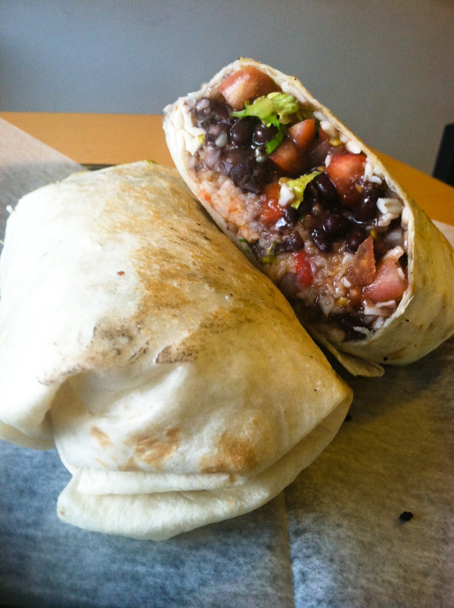

Home
Instant Burritos

Photo by Steven Depolo,
licensed under CC 3.0.
Description
Although not literally instant, this burrito recipe can be done in 30 minutes or less.
Meat is optional. Simply skip step 1 involving meat, add 1 tbsp of preferred oil to saute onions and you will still have a delicious burrito filling!
Ingredients
- 1lb Ground Beef or protein of choice (Optional)
- x2 Pack of Taco Seasoning
- x2 15oz Can of Diced Tomato
- x2 15oz Can of Black Beans or preferred beans
- x2 Cups of Minute Rice
- x1 White Onion (diced)
- x6-8 Very Large Tortillas
- Toppings of your choice (i.e. cheese, sour cream...)
Instructions
NOTE: If using a different protein, cook to recommended temperature and chop into small pieces or shred
- Brown ground beef in a large skillet or pot with one pack of taco seasoning
- Add diced onion and continue cooking until onions are slightly browned
- Add beans(undrained), tomatoes(undrained), rice, and 1-2 packs of taco seasoning into beef and onion mixture and bring to a low boil
- Reduce heat, cover, allow to simmer until rice is tender (about 10 minutes), and stir occasionally
- Heat tortillas in skillet or microwave until warm
- Add desired amount of burrito filling and toppings to tortilla
- Wrap and Enjoy!